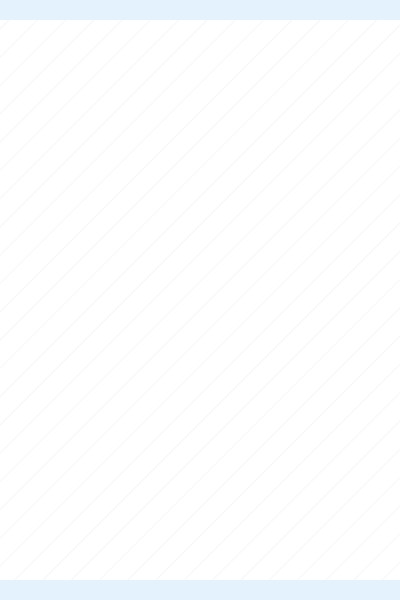
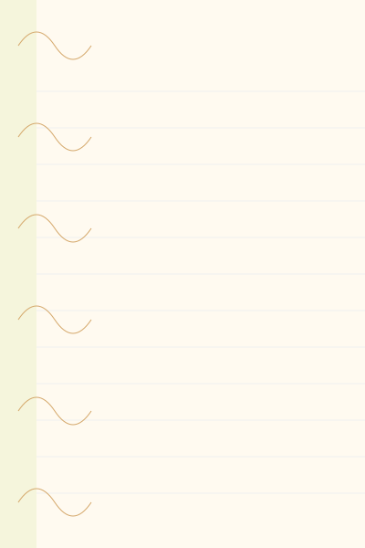

背景选择
选择一个模板或上传自定义图片


年级选择
选择年级以应用对应的信件模板和老师列表
样式设置
字体将自动从Google Fonts下载
24px
1.2
边距调整
20px
20px
20px
20px
文本位置调整
在预览区直接拖动信件内容调整位置
模板图片调整
100%
在预览区拖动背景图片可以调整其位置
姓名列表
每行输入一个姓名（支持批量粘贴）
支持300个左右姓名
0 个姓名
信件内容
使用"XX"作为姓名占位符
老师署名
信件预览
我最亲爱的XX：
当你读到这封信时，咱们秋季的语文之旅已经走过一半啦～这 7 讲里，我们跟着文字 "环游世界做苹果派"，在 "极境特快" 里感受 "先声夺人写开头" 的魅力，还在 "城市里的小房子" 中品味四季流转之美…… 你看，语文就像一座神奇的桥梁，把课本里的故事和生活里的美好紧紧连在一起，你每次认真分析段落、积极分享想法的模样，老师都记在心里呢～
后半程还有更多惊喜在等着我们：我们会跟着 "青蛙和蟾蜍" 探寻友谊的真谛，用 "创意日记" 把心里的奇思妙想一一记录，还能在 "三星堆与山海经" 的奇遇里，触摸古老神话与文明的温度；甚至会跟着 "神笔马良" 思考 "如何正确帮助他人"，在 "新桃旧符" 里感受华夏祝福的浪漫…… 这些充满趣味与智慧的内容，都在等着和XX相遇呀～
XX，希望你能一直带着对语文的热爱与好奇，在接下来的学习里继续大胆探索、尽情表达。老师会一直陪着XX，一起把这段秋季的学习旅程，变成又一段闪闪发光的回忆～
始终期待你成长的，
XX老师